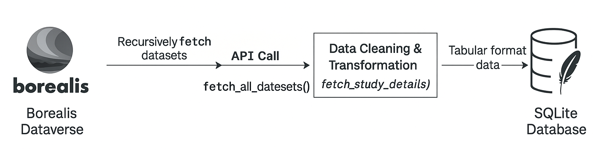

API Guide

Below is a summary of the key API endpoints used in RED-X, the type of data each provides, and how it contributes to the app’s functionality.
| API Call Purpose | Endpoint | Description | Information Returned |
|---|---|---|---|
| Fetch Dataverse Contents | https://borealisdata.ca/api/dataverses/{id}/contents |
Retrieves contents of a given dataverse (datasets and sub-dataverses). Used recursively to explore all levels of the dataverse hierarchy. | Dataset IDs, types (dataset, dataverse), titles, metadata fields |
| Fetch Dataverse Metadata | https://borealisdata.ca/api/dataverses/{id} |
Retrieves the name of the dataverse and basic metadata. Used for labeling and organizing datasets by layers (e.g., College, Department). | Dataverse title, alias, description, creation date, and more |
| Fetch Dataset Metadata (Study Info) | https://borealisdata.ca/api/datasets/export?exporter=schema.org&persistentId={DOI} |
Retrieves detailed metadata for each dataset using its persistent ID (DOI). | Study title, publication date, authors, affiliations, keywords, objectives, data license, spatial and temporal info |
| Fetch Dataset Files | https://borealisdata.ca/api/access/dataset/:persistentId/?persistentId={DOI} |
Downloads the zipped data archive for a dataset. | .tab, .csv, .txt, and other file types packaged in a ZIP archive |
1.0 API Token
To access the Borealis Dataverse API, RED-X uses a secure API token that is user-specific. This token is stored safely using R’s system environment variables and never hard coded in the script. This helps protect the token from unauthorized access.
Api_token <- Sys.getenv("API_TOKEN") # Retrieve the API token from environment variablesThe API token is expected to be stored in your system environment (e.g., .Renviron file). This ensures sensitive credentials are encrypted and hidden from the codebase.
Access Levels
- Public users (without an API token) can only access openly available datasets.
- Authenticated users with an API token may access restricted datasets depending on their permissions.
- Super users (e.g., developers or internal collaborators) may edit the .Renviron file or project settings to include a higher-level API token to unlock more datasets.
If you are a developer or contributor with elevated access, you can add your token to your environment like so:
# In .Renviron (do not share publicly!)
API_TOKEN=your-personal-token-hereNever share your API token publicly or hardcode it into your project files.
2.0 API Calls
The RED-X app uses several structured API calls to collect and manage data from the Borealis Dataverse repository. These API integrations enable RED-X to dynamically update its internal SQLite database and render updated network graphs, metadata summaries, and data tables. Below, we outline the core API functions used in the app, the purpose they serve, and the full R implementation.
2.1 Fetch Dataverse Contents
This function recursively queries all the nested dataverses and extracts metadata including the title, identifier, and persistent DOI. It builds a tree structure mapping each dataset to its college and department.
It returns a tidy tibble with fields such as College_Campus_Institution, Departments_ResearchCentres, and persistent_id, which are later used to fetch detailed metadata and files. See the R code snippet below;
fetch_all_datasets <- function(id, layer_titles = character()) {
base_url <- "https://borealisdata.ca/api/dataverses/"
results <- tibble()
if (id == "147125") return(results)
url <- paste0(base_url, id, "/contents")
response <- tryCatch({
request(url) %>%
req_headers(`X-Dataverse-key` = Api_token) %>%
req_perform()
}, error = function(e) {
message("Request failed for Dataverse ", id, ": ", e$message)
return(NULL)
})
if (!is.null(response) && response$status == 200) {
dataverse_raw_data <- fromJSON(rawToChar(response$body), flatten = TRUE) %>%
as_tibble()
...
}
}2.2 Fetch Dataverse Metadata
This step uses the Borealis endpoint https://borealisdata.ca/api/dataverses/{id} to retrieve basic metadata for a specific dataverse. The goal is to extract the title of each dataverse, which is used in RED-X to label hierarchical layers like College or Department when traversing nested dataverses.
The fetch_all_datasets() function calls this endpoint internally while building the dataset tree. If the API returns successfully, the title is appended to a list that represents the current layer of hierarchy.
title <- tryCatch({
meta_url <- paste0(base_url, id)
meta_response <- request(meta_url) %>%
req_headers(`X-Dataverse-key` = Api_token) %>%
req_perform()
meta_data <- fromJSON(rawToChar(meta_response$body), flatten = TRUE)
meta_data$data$name
}, error = function(e) {
message("Failed to retrieve title for Dataverse ", id, ": ", e$message)
return(NA_character_)
})This snippet is embedded inside the recursive dataset fetching function and helps categorize each dataset by its parent structure. It ensures that the metadata returned from .../dataverses/{id} is used to construct meaningful labels for later use in filtering and network visualization.
2.3 Fetch Datasets Metadata
This endpoint retrieves rich metadata for a dataset using its persistent identifier (DOI). RED-X uses the Borealis API: https://borealisdata.ca/api/datasets/export?exporter=schema.org&persistentId={DOI} to extract machine-readable metadata structured using schema.org standards.
For each DOI collected during the recursive dataverse fetch, this API call returns detailed information such as:
- Study title
- Publication date
- Authors and affiliations
- Keywords
- Objectives/abstract
- Spatial and temporal coverage
- Funders and license
- List of associated files
This metadata is compiled into a tidy tibble and cached in the local SQLite database to support search, filtering, visualization, and data exploration across RED-X. The R code for the function can be found below;
fetch_study_details <- function(data) {
if (!is.data.frame(data) || !"persistent_id" %in% names(data) || nrow(data) == 0) {
warning("Invalid input: Ensure 'data' is a dataframe and contains 'persistent_id' column.")
return(tibble())
}
BaseURL_details2 <- "https://borealisdata.ca/api/datasets/export?exporter=schema.org&persistentId="
detailed_data_list <- vector("list", nrow(data))
for (i in seq_len(nrow(data))) {
persistent_id <- data$persistent_id[i]
Full_url_details <- paste0(BaseURL_details2, persistent_id)
tryCatch({
response_details <- request(Full_url_details) %>%
req_headers(`X-Dataverse-key` = Api_token) %>%
req_perform()
if (response_details$status == 200) {
detail_oac2 <- jsonlite::fromJSON(rawToChar(response_details$body), flatten = TRUE)
detailed_data_list[[i]] <- tibble(
Title = detail_oac2[["name"]],
PublicationDate = detail_oac2[["datePublished"]],
Authors = if (!is.null(detail_oac2[["author"]])) paste(detail_oac2[["author"]][["name"]], collapse = "; ") else NA,
Affiliations = if (!is.null(detail_oac2[["author"]][["affiliation.name"]])) paste(detail_oac2[["author"]][["affiliation.name"]], collapse = "; ") else NA,
Keywords = if (!is.null(detail_oac2[["keywords"]])) paste(detail_oac2[["keywords"]], collapse = "; ") else NA,
Objectives = detail_oac2[["description"]],
Citation = if (!is.null(detail_oac2[["citation"]])) paste(detail_oac2[["citation"]][["name"]], collapse = ", ") else NA,
PeriodCovered = if (!is.null(detail_oac2[["temporalCoverage"]])) paste(detail_oac2[["temporalCoverage"]], collapse = "; ") else NA,
StudyLocation = if (!is.null(detail_oac2[["spatialCoverage"]])) paste(detail_oac2[["spatialCoverage"]], collapse = ", ") else NA,
Funder = if (!is.null(detail_oac2[["funder"]])) paste(detail_oac2[["funder"]][["name"]], collapse = "; ") else NA,
FileList = if (!is.null(detail_oac2[["distribution"]])) paste(detail_oac2[["distribution"]][["name"]], collapse = "; ") else NA,
DataLicense = if (!is.null(detail_oac2[["license"]])) paste(detail_oac2[["license"]], collapse = "; ") else NA,
DOI = persistent_id,
CollegeName = data$College_Campus_Institution[i],
DepartmentName = data$Departments_ResearchCentres[i]
)
} else {
warning(paste("Failed to fetch data for DOI:", persistent_id, "Status code:", response_details$status))
}
}, error = function(e) {
message("Error fetching details for DOI ", persistent_id, ": ", e$message)
detailed_data_list[[i]] <- tibble()
})
}
detailed_data <- bind_rows(detailed_data_list) %>% unique()
return(detailed_data)
}This function is essential for enriching the RED-X app with the metadata that powers the keyword/author network, study listings, and search filters.
2.4 Fetch Datasets Files
To access the raw data files associated with each dataset, RED‑X uses the following endpoint:
https://borealisdata.ca/api/access/dataset/:persistentId/?persistentId={DOI}
This API call downloads a ZIP archive containing all public files linked to a dataset identified by its DOI. These files typically include:
.tabor.csvfiles (data tables).txtorREADMEfiles (documentation or metadata)
Other file types (.xls, .zip, images) depending on the study
The access_data() function handles the API request, downloads the ZIP content into a temporary directory, extracts the files, and returns a list of file paths. This enables the RED‑X app to programmatically retrieve and process datasets for filtering, previewing, and metadata display. See the r code below;
access_data <- function(doi) {
Acess_data_url <- "https://borealisdata.ca/api/access/dataset/"
full_url3 <- paste0(Acess_data_url, ":persistentId/?persistentId=", doi)
tryCatch({
response <- request(full_url3) %>%
req_headers(`X-Dataverse-key`= Api_token) %>%
req_perform()
if (response$status_code == 200) {
# Get the content of the response as a raw vector
zip_content <- resp_body_raw(response)
# Use tempfile to create a temporary file for the zip content
temp_zip <- tempfile(fileext = ".zip")
# Write the raw vector to the temporary file
writeBin(zip_content, temp_zip)
# Use a temporary directory to extract the files
temp_unzip_dir <- tempfile()
# Extract the files to the temporary directory
unzip(temp_zip, exdir = temp_unzip_dir)
# List files in the temporary directory
file_list <- list.files(temp_unzip_dir, full.names = TRUE)
# Clean up the temporary zip file
unlink(temp_zip)
return(file_list)
}
else {
return(NULL)
}
}, error = function(e) {
print("Restricted data not accessible.")
})
}Only supported file formats are used in the app and are filtered using the function below;
filter_filelist(file_list, is_txt = TRUE) # Get README.txt files
filter_filelist(file_list, is_txt = FALSE) # Get .csv/.tab filesSee the Developer Guide to contribute to RED-X.